Welcome to the past page. In this page we will talk about the my past.
Year 2006 - 2009:
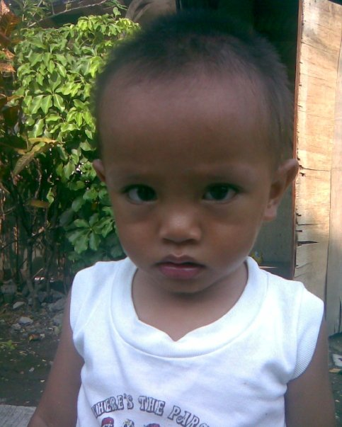My name is Gian Jum Mellapis Lucena, given to me by my parents when I was bord. I first recall becoming aware of my surroundings at the age of 3. I have a faint memory of waking up in ben with my dad sitting beside me. After that, I remember going to an airposrt and seeing my mom for the first time. However, beyond that, my memory fades, and I cannot recall what happened next.
Hometown:

Philippines is my hometown, I was born here raised here and lived here for 17 years. Philippines is a great place to travel, Philippines is known for its island there are about 7 thousand Island in the Philippines. people there are humble and bery friendly, if you ask the right person of course. There are a lot of good thngs about the philippines. I love my country😁😆.
Year 2011 - 2012:


When I was 5 - 6 years-old, my family and I moved to a farm where I started attending Kindergarten. I remember doing well in my grades which made my mom happy. Eventually, my mom suggested to my dad that we should move to my grandpa's place since it was vacant. Living there was better than the farm, but I still miss my friend on the farm I play with them every day when I'm board. My mom did't have a job at the time as she had just returned from Hong Kong, so we were struggling financially. All the money she earned had to go towrds my dad's farm.
Sister 2012:
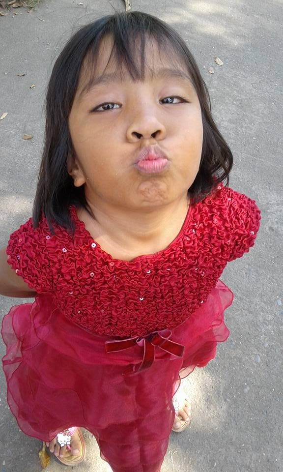
When I was 6 years-old my sibling, Angie, was bord. She was a typical sweet, kind, and cute little sister that any big brothers would want. However, one day while we were tanking a back togethen, she accidentally slipped and bumped her head on the concrete floor. My Mom came quickly to us and rushed her to the hospital. Thankfully, the doctor told my mother that she was ok. Soon after the acident my sibling started behaving strangely. She began peeing on the floor and even drank her own urine once, yeah it was preaty gross. She started talking gibrish things that we can't even under stand. Worried about her, my mom took her to the doctor, who diagnosed her, after some time the doctor told my mother that she has brain illness, so she had to take medicine to help her condition.
Luckily, her condition is now getting better and better. At first she could not describe a word properly, but now we can communicate properly bit by bit. I just pray that she will behave better and start to think about her future.
Year 2015 - 2016
One time, I asked my mother 'when will she die' and then I saw her face very shocked and told me that a person die when the time comes. Even tho she said this I know now that she must have felt very saddened to what I said. I didn't know what I was thinking that day but I feel stupid for saying that.
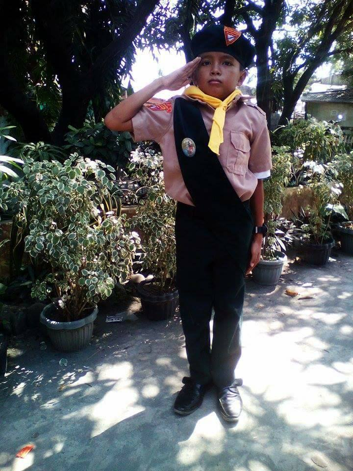 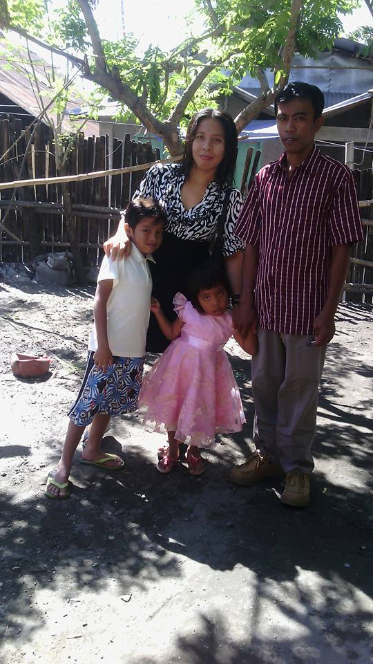When I said that question, my parents sent me to oxidental mindoro to learn from my mistakes by having no parent nearby. I live with my aunt and my causins in mindoro we always play together when we were bored. I wen't to 'Paradise oxidental Mindoro' to study at that time, we were near a beach which was very cool. I studied there for one year at grade 5.
After some time there in mindoro, I started to feel alone like I was needing someone very important to me. It felt very wierd and strange, I started to over think or think alot of things and one of them is my mother.
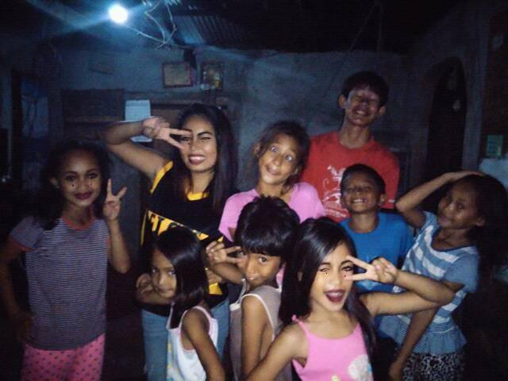December 2015, my paprents decided to visit me on how I was doing. When I knew they were comming I felt very exited and very happy. I waited for them for 2 days. They arrived at night, and when I saw them I was very exited, I hugged them like crazy and didn't want to let go. We spend time together on christmas and even on new years. After some time of spending time with my parents it is now time for them to go back home. I wanted to go with them but they prevented me to go because I need to finish my school year. I waited and waited for time to pass.
June 2016, it is now my graduation ceremony, I have waited to this for days, now that its time to go back home. After the graduation my father picked me up at night we went straight home.
Year 2018 - 2019
During my Junior High School Days, every day was filled with fun. My classmates and I were like a family we helped each other, laughed together, and learned from our class. After school. we always played outside togethe, creating some of the most enjoyavle memories of my life.
Pandemic 2020 - 2022
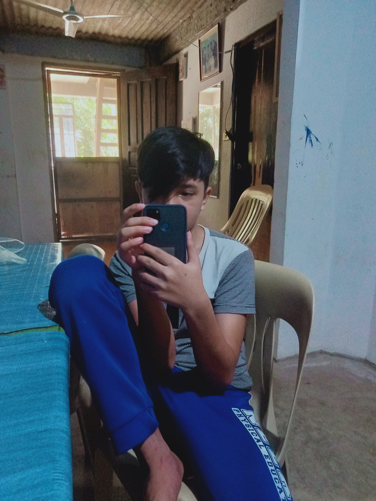The pandemic brought a deadly virus that affected many people world wide. At first I thought we wouldn't be going to school for two years, but I was mistaken. We started attending classes using an app called Zoom. Honestly, I didn't attend those classes much; I was busy playing games than studying. I began relying on the internet to solve my school test, quizes, and assignments I became more lazy each day. Doing this every single day for a year made me forget how to interact with others and made me become more indipendent.
One year of doing litterally nothing in my life I slowly began to realize my actions. I kept thinking about how they woulda affect my future. I was worried that if I continued this way, I might end up homeless and will live on the streets on the future. So I started planning my life and how I should act. I am glad that I started thinking like that that day, otherwise it would be done for me.
Year 2022 - 2023
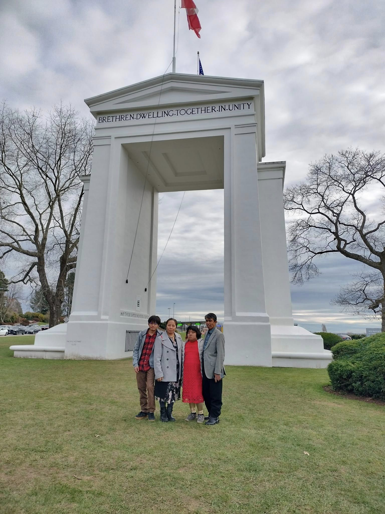This year the pandemic has ended, sure there are still pandemic particles hanging around here and there, but the most important is that its over. After the pandemice I started to go to school daily like the old days, I was very excited to start my life again now that the pandemic is over.
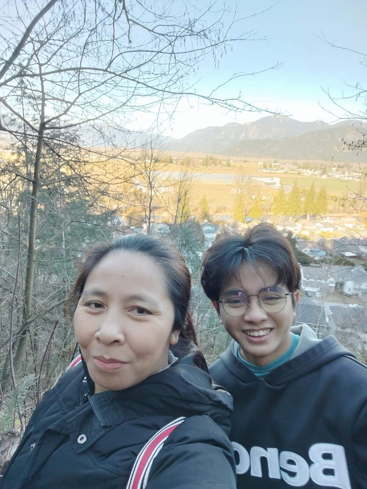Since the pandemic the life of my family started to go downhill. My mom had low payments on the school that she worked. My dad is not really earning anything from his farm, but he still went to his farm. My father had to travel back and fort from the farm to the house just to take care of his farm, he always went home every saturday. We were really struggling, but on the good side we had food, and that's only what we need to survive, but it does not last long.
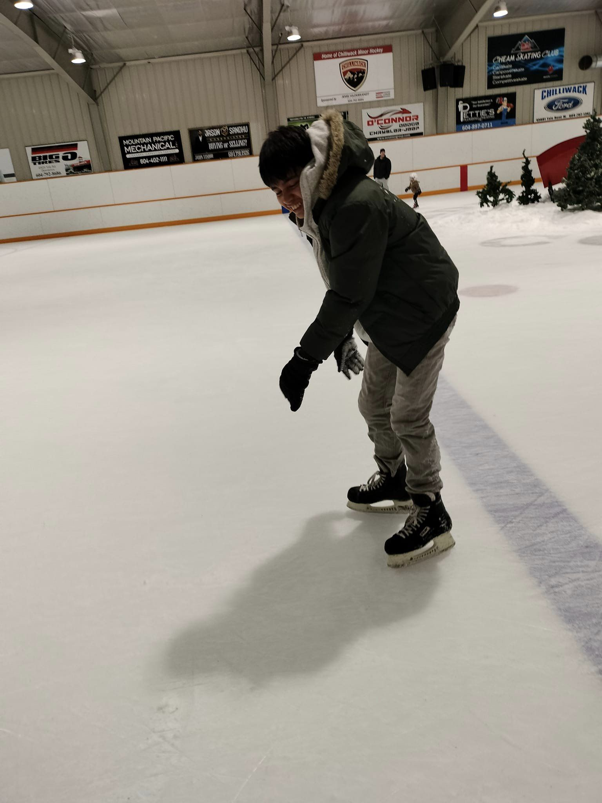Some time later my parent was struggling to find money for food. My parents started to get have dept's just to get food and having to borrow some money to the neighbors was really shamful for me to do. One time i saw a youtube video about manking money online, so I search deeper until I encountered crypto currency. Crypto currency is a trading platform where you purchase an amount of currency and wait for it to increase.
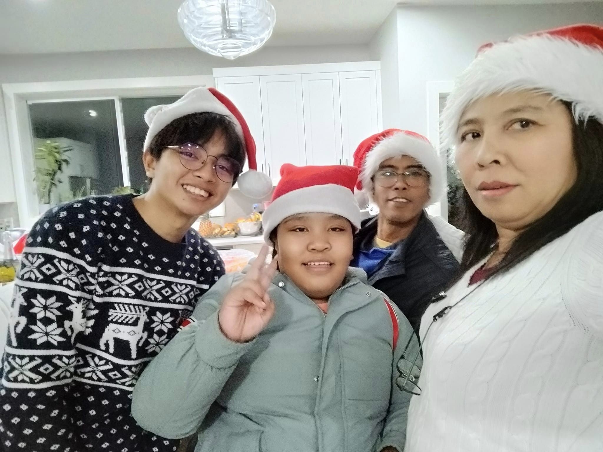I did this for 4 year but wasn't really getting anything out of it. December 2022 we were really struggling to get any money so my parent tried to borrow some money from my aunt on Canada. She realized that we were about to be homeless, so she did what any kind person would do is to make us go to Canada to make a new start from life. We were so happy that someone was able to sponsor us to Canada so we started to get our pasport and booked our flight.
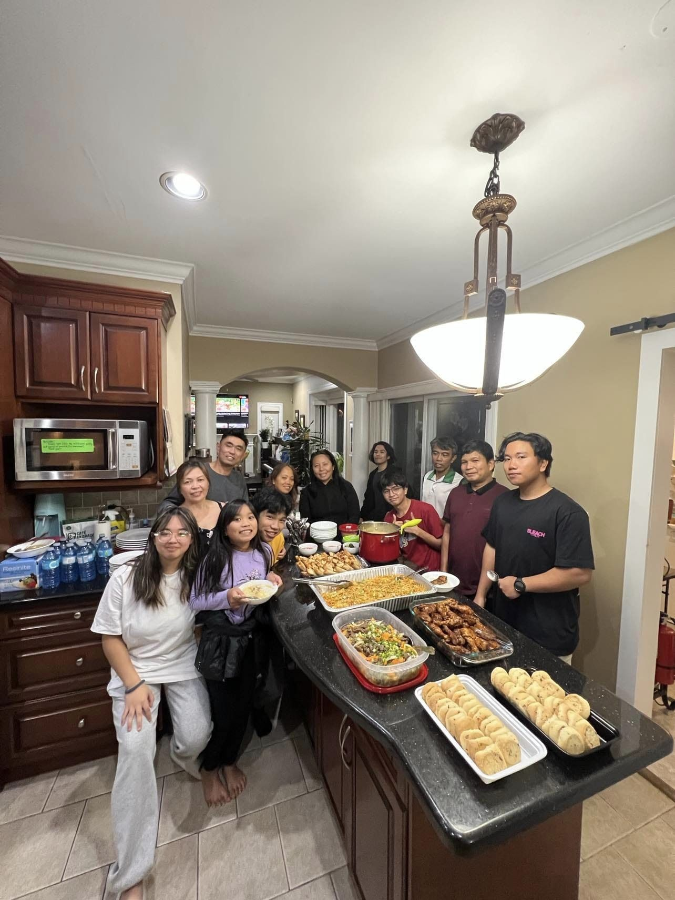After we did that we spend our time left to hangout with friend and say our goodbyes, I was so sad that I have to leave my friend but it is what it is. After that we now arrived at the airport and did some stuff and waited for hours for our flight. The flight was really scarry it was my first time to ride an airplane, at first I thought that we were about to crash because there was a terbulance that happened so the plane was really shaky and stuff. We still arive in Canada safe and sound thanks GOD that we did arive safely.
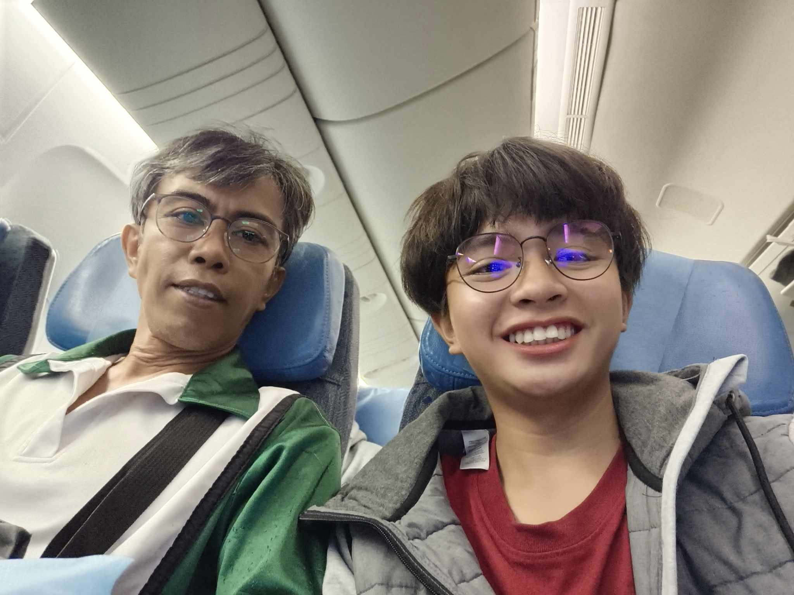Ater we arived at the airport, we got our stuff and did some stuff. When we were heading out I saw that my aunt, uncle, and cousins was waiting for us. We embraced each other and celebrated our Arival.
While we were in Canada we did many things in our winter break; we went skating, hiking, traveling, and celebrated new years eve. It was very fun coming here in Canada, there's food to eat, there's jobs to take. My life went uphill after coming in Canada.
You have arived at the end of the past page time to read the present page.